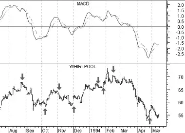

The MACD ("Moving Average Convergence/Divergence") is a trend following momentum indicator that shows the relationship between two moving averages of prices. The MACD was developed by Gerald Appel, publisher of Systems and Forecasts.
The MACD is the difference between a 26-day and 12-day exponential moving average. A 9-day exponential moving average, called the "signal" (or "trigger") line is plotted on top of the MACD to show buy/sell opportunities. (Appel specifies exponential moving averages as percentages. Thus, he refers to these three moving averages as 7.5%, 15%, and 20% respectively.)
The MACD proves most effective in wide-swinging trading markets. There are three popular ways to use the MACD: crossovers, overbought/oversold conditions, and divergences.
CrossoversThe basic MACD trading rule is to sell when the MACD falls below its signal line. Similarly, a buy signal occurs when the MACD rises above its signal line. It is also popular to buy/sell when the MACD goes above/below zero.
Overbought/Oversold ConditionsThe MACD is also useful as an overbought/oversold indicator. When the shorter moving average pulls away dramatically from the longer moving average (i.e., the MACD rises), it is likely that the security price is overextending and will soon return to more realistic levels. MACD overbought and oversold conditions exist vary from security to security.
DivergencesA indication that an end to the current trend may be near occurs when the MACD diverges from the security. A bearish divergence occurs when the MACD is making new lows while prices fail to reach new lows. A bullish divergence occurs when the MACD is making new highs while prices fail to reach new highs. Both of these divergences are most significant when they occur at relatively overbought/oversold levels.
The following chart shows Whirlpool and its MACD.
 I drew "buy" arrows when the MACD rose above its signal line and drew "sell" when the MACD fell below its signal line.This chart shows that the MACD is truly a trend following indicator--sacrificing early signals in exchange for keeping you on the right side of the market. When a significant trend developed, such as in October 1993 and beginning in February 1994, the MACD was able to capture the majority of the move. When the trend was short lived, such as in January 1993, the MACD proved unprofitable.
The MACD is calculated by subtracting the value of a 26-day exponential moving average from a 12-day exponential moving average. A 9-day dotted exponential moving average of the MACD (the "signal" line) is then plotted on top of the MACD.